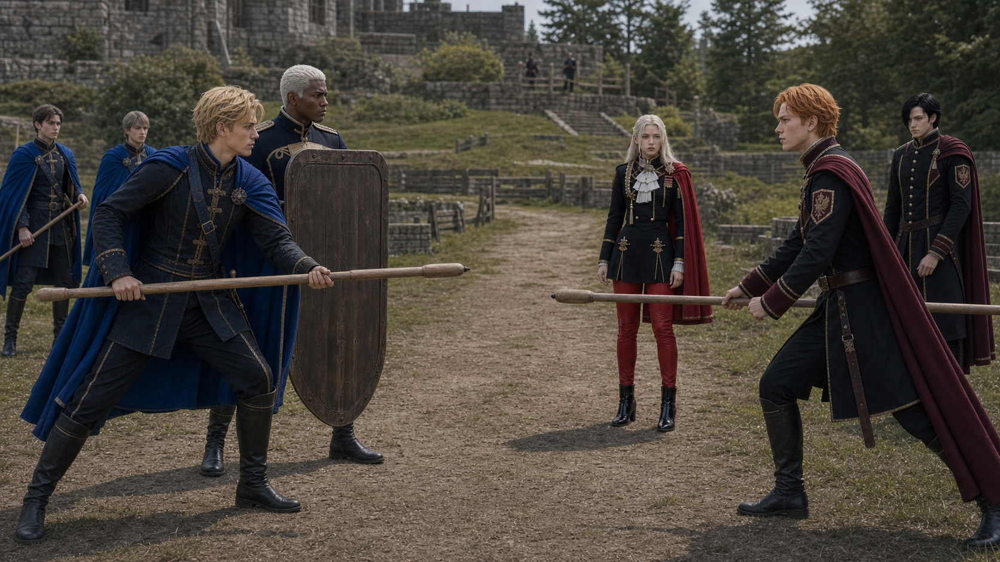

P0 Scene09 Reference Board
Index
镜头027C：首次接敌
Dimitri/Dedue 第一次接触
Generated Keyframe

Character Reference Assets

Dimitri
youthful blond Blue Lions prince, training lance, aggressive but controlled
assets/characters/blue_lions/Dimitri/academy/selected.png
Dedue
tall broad guardian, dark skin, white hair, shield-wall posture
assets/characters/blue_lions/Dedue/academy/selected.png
Edelgard
silver-haired Black Eagles leader, red cape and visible red pants, composed command
assets/characters/black_eagles/Edelgard/academy/selected.png
Hubert
dark-haired Black Eagles mage, pressure caster behind front line
assets/characters/black_eagles/Hubert/academy/selected.png
Ferdinand
orange-haired noble cavalry student, stabilizes and intercepts Felix
assets/characters/black_eagles/Ferdinand/academy/selected.pngSubframes
分镜点 A：路线汇合
Dimitri and Dedue arrive first at the central outer passage as Edelgard's front line braces.
episodes/EP02/generated/mock_battle_production_keyframes_2026-07-17/Shot027C_A_keyframe.png
分镜点 B：首次接敌
Training lance and shield hit the Black Eagles front rank with controlled nonlethal force.
episodes/EP02/generated/mock_battle_production_keyframes_2026-07-17/Shot027C_B_keyframe.png
分镜点 C：指挥纵深
Edelgard, Hubert, and Ferdinand remain readable behind the line, not panicked.
episodes/EP02/generated/mock_battle_production_keyframes_2026-07-17/Shot027C_C_keyframe.png
分镜点 D：菲力克斯等待侧切
Felix is framed on the side gap, coiled to enter but still under Byleth's timing.
episodes/EP02/generated/mock_battle_production_keyframes_2026-07-17/Shot027C_D_keyframe.png
Production Prompt
Create a production-ready cinematic live-action storyboard keyframe for EP02 Scene09 mock battle, Shot027C Dimitri Dedue First Contact.
Current script beat: Dimitri/Dedue 第一次接触.
Frame content: Dimitri and Dedue collide with Black Eagles front line in narrow central passage; Edelgard, Hubert, Ferdinand hold depth.
Characters and identity locks: Dimitri as blond academy prince, youthful, blue academy uniform, training lance, intense but restrained; Dedue very tall and broad-shouldered, dark skin, short white hair, shield-wall guardian posture; Edelgard academy leader with pale silver hair, black uniform, red cape, bright red fitted pants visible when full body appears, composed political command; Hubert severe black-haired mage, dark magic pressure, shadowlike presence behind Edelgard; Ferdinand orange-haired noble student, proud forward posture, Black Eagles front-line discipline.
The setting is the canon-inspired Garreg Mach outdoor mock battle field: one continuous tactical map with grass, low stone walls, wooden barriers, thickets, stone steps, and a northeast raised heal-tile platform. It must not look like a small training yard or isolated sparring ring.
Use wooden or blunted academy training weapons, controlled nonlethal contact, no blood, no serious injury. Make the frame readable as a movie storyboard still that can guide AI video generation: clear geography, character blocking, screen direction, and the peak tactical action.
Camera: Dimitri and Dedue reach the narrow central outer passage first and collide with the Black Eagles front line. Dimitri lowers a training lance; Dedue sets a broad shield. Edelgard, Ferdinand, and Hubert are visible behind the first rank, stable and not panicking..
Style: photorealistic live-action, 16:9 cinematic frame, natural daylight, youthful academy students, identity-locked faces and costumes, no UI.
Character asset reference requirement:
- Dimitri: assets/characters/blue_lions/Dimitri/academy/selected.png; youthful blond Blue Lions prince, training lance, aggressive but controlled
- Dedue: assets/characters/blue_lions/Dedue/academy/selected.png; tall broad guardian, dark skin, white hair, shield-wall posture
- Edelgard: assets/characters/black_eagles/Edelgard/academy/selected.png; silver-haired Black Eagles leader, red cape and visible red pants, composed command
- Hubert: assets/characters/black_eagles/Hubert/academy/selected.png; dark-haired Black Eagles mage, pressure caster behind front line
- Ferdinand: assets/characters/black_eagles/Ferdinand/academy/selected.png; orange-haired noble cavalry student, stabilizes and intercepts Felix
The generated face, hairstyle, age impression, costume silhouette, and color accents must remain continuous with these selected.png assets across all subframes.